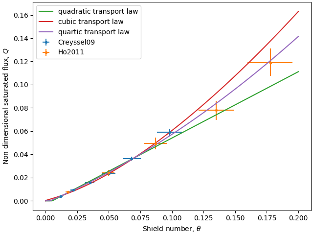
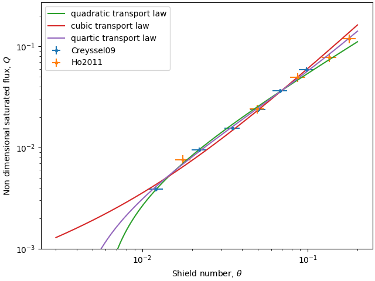

Note
Go to the end to download the full example code.
Fitting transport laws#
Fitting the different transport laws to the laboratory data of:
- [1] Creyssels, M., Dupont, P., El Moctar, A. O., Valance, A., Cantat, I., Jenkins, J. T., … & Rasmussen, K. R. (2009). Saltating particles in a turbulent boundary layer: experiment and theory. Journal of Fluid Mechanics, 625, 47-74.
- [2] Ho, T. D., Valance, A., Dupont, P., & El Moctar, A. O. (2011). Scaling laws in aeolian sand transport. Physical Review Letters, 106(9), 094501.
- 
- 
quadratic transport law: $\omega = 7.81$, $\theta_{\rm th}$ = 5.34e-03
cubic transport law: $\omega = 1.73$, $\theta_{\rm th}$ = -1.06e-02
quartic transport law: $\theta_{\rm th}$ = 3.52e-03
import numpy as np
import matplotlib.pyplot as plt
from scipy.optimize import curve_fit
from pydune.physics import (quadratic_transport_law, cubic_transport_law, quartic_transport_law)
# Loading the different data
Data_creyssel09 = np.load('../src/Data_creyssel09.npy',
allow_pickle=True).item()
Data_Ho2011 = np.load('../src/Data_Ho2011.npy',
allow_pickle=True).item()
Datasets = {'Creyssel09': Data_creyssel09, 'Ho2011': Data_Ho2011}
# preparing data for fits
shield = np.concatenate([Datasets[dataset]['Shield'] for dataset in sorted(Datasets.keys())])
shield_err = np.concatenate([np.abs(Datasets[dataset]['Shield'] - Datasets[dataset]['Shield_err']).mean(axis=0)
for dataset in sorted(Datasets.keys())])
Q = np.concatenate([Datasets[dataset]['Q_adi'] for dataset in sorted(Datasets.keys())])
Q_err = np.concatenate([np.abs(Datasets[dataset]['Q_adi'] - Datasets[dataset]['Q_adi_err']).mean(axis=0)
for dataset in sorted(Datasets.keys())])
# ### transport laws used
laws = [quadratic_transport_law, cubic_transport_law, quartic_transport_law]
labels = ['quadratic transport law', 'cubic transport law', 'quartic transport law']
p0_s = [[0.01, 6], [0.02, 4], [0.02]] # initial guesses to help fit convergence
theta_plot_lin = np.linspace(0, 0.2, 400)
theta_plot_log = np.logspace(np.log10(3e-3), np.log10(2e-1), 400)
for i, theta_plot in enumerate([theta_plot_lin, theta_plot_log]):
fig, ax = plt.subplots(1, 1, constrained_layout=True)
# #### plotting datasets
for dataset in Datasets.keys():
ax.errorbar(Datasets[dataset]['Shield'], Datasets[dataset]['Q_adi'],
xerr=np.abs(Datasets[dataset]['Shield'] - Datasets[dataset]['Shield_err']),
yerr=np.abs(Datasets[dataset]['Q_adi'] - Datasets[dataset]['Q_adi_err']),
linestyle='None', label=dataset, fmt='.')
# ### fitting and ploting results
for law, label, p0 in zip(laws, labels, p0_s):
p, pcov = curve_fit(law, shield, Q, sigma=Q_err, absolute_sigma=True, p0=p0)
ax.plot(theta_plot, law(theta_plot, *p), label=label)
#
if i == 1:
if p.size == 2:
print(
r"""{}: $\omega = {:.2f}$, $\theta_{{\rm th}}$ = {:.2e}""".format(label, p[1], p[0])
)
else:
print(
r"""{}: $\theta_{{\rm th}}$ = {:.2e}""".format(label, p[0])
)
ax.set_xlabel(r'Shield number, $\theta$')
ax.set_ylabel('Non dimensional saturated flux, $Q$')
ax.legend()
if i == 1:
ax.set_xscale('log')
ax.set_yscale('log')
ax.set_ylim(bottom=1e-3)
plt.show()
Total running time of the script: (0 minutes 0.387 seconds)